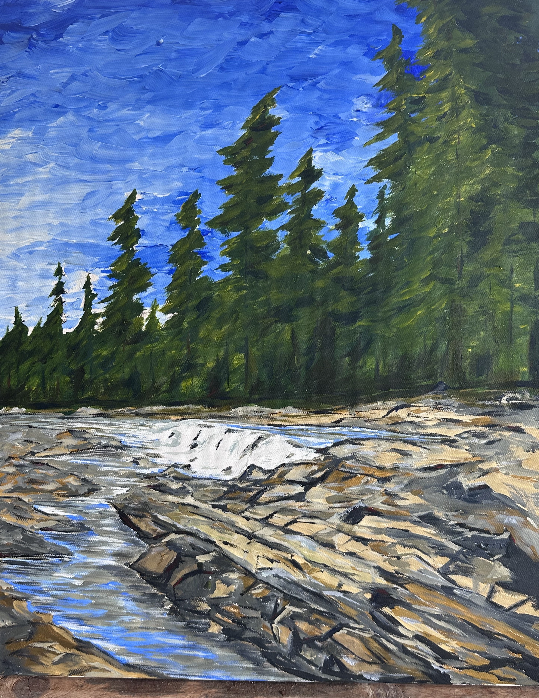
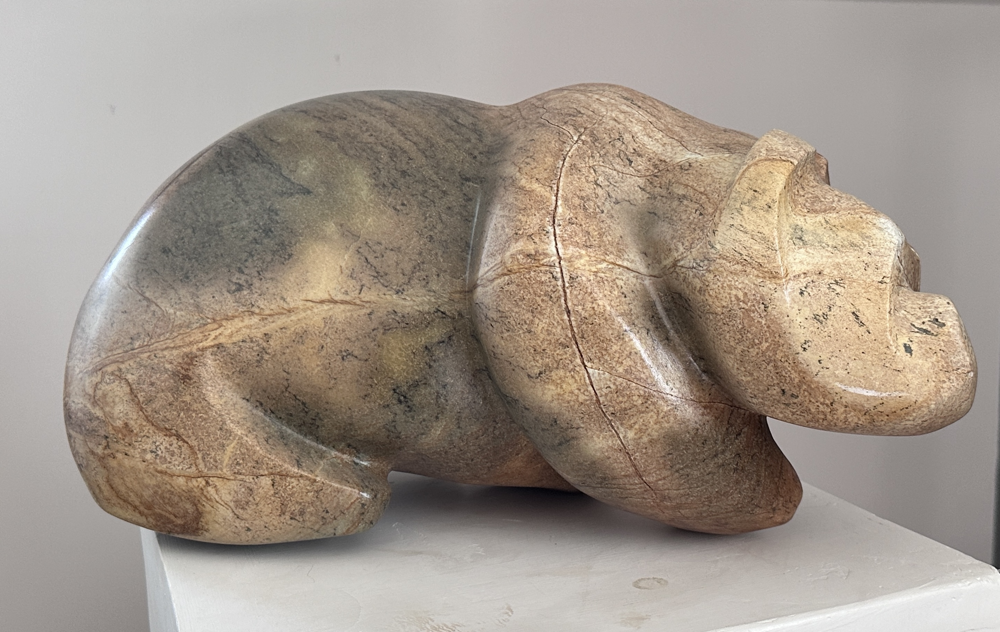

A curated rotation of original Canadian works. Build equity as you live with the art. Scroll to begin the experience.


Based in Port Perry, Ontario, Mike creates works that explore the intersection of raw nature and abstract form. Every piece is a singular original, managed personally from studio to installation.
The Art Rotation Co. (ARC) represents a new era for collectors—one where fine art is lived with, rotated, and acquired through a bespoke, white-glove experience.